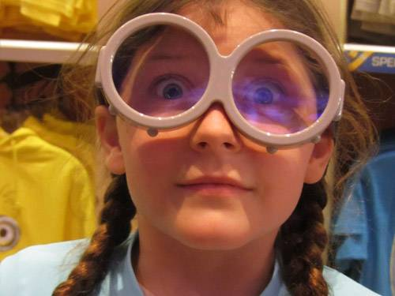

10 Tips to Teach Children About Eye Safety
It is important to teach your children about eye health and safety from a young age. This includes awareness about how your overall health habits affect your eyes and vision as well as how to keep your eyes safe from injury and infection. Starting off with good eye habits at a young age will help to create a lifestyle that will promote eye and vision health for a lifetime.

Aug 30, 2016

10 Eye Health Tips for All:
- Eat right. Eating a balanced diet full of fresh fruits and vegetables (especially green leafies such as kale, spinach and broccoli) as well as omega-3s found in fish, such as salmon, tuna and halibut, help your eyes get the proper nutrients they need to function at their best.
- Exercise. An active lifestyle has been shown to reduce the risk of developing a number of eye diseases as well as diabetes - a disease which which can result in blindness.
- Don’t Smoke. Smoking has been linked to increased risk of a number of vision threatening eye diseases.
- Use Eye Protection. Protect your eyes when engaging in activities such as sports (especially those that are high impact or involve flying objects), using chemicals or power tools or gardening. Speak to your eye doctor about the best protection for your hobbies to prevent serious eye injuries.
- Wear Shades. Protect your eyes from the sun by wearing 100% UV blocking sunglasses and a hat with a brim when you go outside. Never look directly at the sun.
- Be Aware: If you notice any changes in your vision, always get it checked out. Tell a parent or teacher if your eyes hurt or if your vision is blurry, jumping, double or if you see spots or anything out of the ordinary. Parents, keep an eye on your child. Children don’t always complain about problems seeing because they don't know when their vision is not normal vision. Signs of excessive linking, rubbing, unusual head tilt, or excessively close viewing distance are worth a visit to the eye doctor.
- Don’t Rub! If you feel something in your eye, don’t rub it - it could make it worse or scratch your eyeball. Ask an adult to help you wash the object out of your eye.
- Give Your Eyes a Break. With the digital age, a new concern is kids' posture when looking at screens such as tablets or mobile phones. Prevent your child from holding these digital devices too close to their eyes. The Harmon distance is a comfortable viewing distance and posture - it is the distance from your chin to your elbow. There is concern that poor postural habits may warp a child's growing body. Also, when looking at a tv, mobile or computer screen for long periods of time, follow the 20-20-20 rule; take a break every 20 minutes, for 20 seconds, by looking at something 20 feet away.
- Create Eye Safe Habits. Always carry pointed objects such as scissors, knives or pencils with the sharp end pointing down. Never shoot objects (including toys) or spray things at others, especially in the direction of the head. Be careful when using sprays that they are pointed away from the eyes.
- Keep Them Clean. Always wash your hands before you touch your eyes and follow your eye doctors instructions carefully for proper contact lens hygiene. If you wear makeup, make sure to throw away any old makeup and don’t share with others.
By teaching your children basic eye care and safety habits you are instilling in them the importance of taking care of their precious eye sight. As a parent, always encourage and remind your children to follow these tips and set a good example by doing them yourself.
Of course don’t forget the most important tip of all - get each member of your family's eyes checked regularly by a qualified eye doctor! Remember, school eye screenings and screenings at a pediatrician’s office are NOT eye exams. They are only checking visual acuity but could miss health problems, focusing issues and binocularity issues that are causing health and vision problems.
Ready to see clearly?
Book a comprehensive eye exam with Carey Brooks, OD in Frisco, TX.